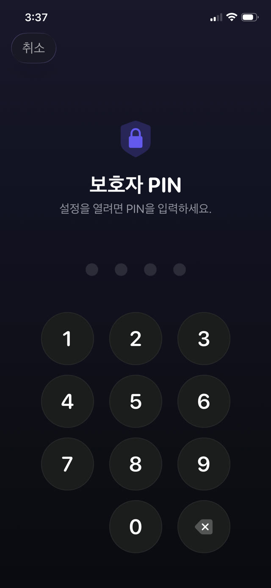

먼저 설정 자체, 다음으로 그 문들, 마지막으로 닫는 방법입니다.


기본으로 있는 방법: Apple 스크린타임
아이의 iPhone에서, 또는 그 기기가 가족 공유에 있다면 부모의 기기에서:
- 설정을 열고 스크린 타임을 누릅니다.
- 콘텐츠 및 개인 정보 보호 제한을 누르고 켭니다.
- 앱 시간 제한으로 카테고리나 개별 앱을 제한하고, 다운타임으로 허용한 것만 실행되는 시간대를 정합니다.
- 기기 잠금 해제 암호와 다른 스크린 타임 암호를 설정하고, 생일은 쓰지 마세요.
- 콘텐츠 및 개인 정보 보호 제한에서 암호 변경과 계정 설정 변경을 차단합니다.
아이들이 실제로 찾아내는 빈틈
어느 것도 기술 지식이 필요하지 않습니다. 전부 학교에서 공유됩니다.
- 지웠다가 다시 설치하기. 특정 앱에 묶인 제한은 앱을 지우고 다시 내려받으면 비껴갑니다. 앱 설치 자체를 제한하지 않았다면요.
- 브라우저. TikTok이나 YouTube 앱을 잠가도 Safari로 같은 사이트를 열 수 있으면 소용없습니다. 카테고리를 막거나 웹 콘텐츠도 함께 제한하세요.
- 시계 바꾸기. 기기의 날짜와 시간을 옮기면 제한이 헷갈릴 수 있습니다. 날짜 및 시간 설정을 잠그지 않았다면요.
- 입력하는 걸 보기. 암호는 추측당하기보다 어깨너머로 학습되는 경우가 더 많습니다.
- '시간 더 요청'. 승인이 당신의 휴대폰에서 한 번의 탭이라면, 정신없는 사이에 승인하게 되고 제한은 사라집니다.
시간 제한의 더 깊은 문제
완벽하게 틀어막은 설정에도 설계상의 결함이 있습니다. 시간이 끝났을 때 달라진 것이라고는 아이가 지루해졌고 당신에게 화가 났다는 것뿐이라는 점입니다. 잠금은 공백을 만듭니다. 그 공백을 채우는 것은 협상이거나 우회법입니다.
그래서 더 오래가는 설정은 잠그기만 하지 않고, 잠금의 반대편에 무언가를 둡니다. 앱은 사라진 것이 아니라 할 만한 가치가 있는 과제 뒤에 있습니다.
목적이 있는 잠금
Guardian Reader는 내부적으로 같은 Apple 스크린타임을 사용하므로 잠금은 운영체제 수준에서 적용됩니다. 브라우저 확장이나 가볍게 지울 수 있는 프로파일이 아닙니다. 다른 점은 무엇이 그것을 여느냐입니다.
타이머가 끝나기를 기다리는 대신, 아이가 종이책의 쪽을 스캔하고 이어서 소리 내어 읽습니다. 앱은 그 읽기를 스캔한 본문과 대조하고 당신이 정한 분을 내줍니다. 그 시간이 끝나면 앱은 스스로 다시 잠깁니다.
설정하기
- 아이의 iPhone에 Guardian Reader를 설치하고 엽니다.
- 요청이 뜨면 스크린 타임 접근을 허용합니다. Apple 자체의 권한입니다.
- 잠글 앱이나 카테고리를 고릅니다. 게임, YouTube, TikTok, 소셜, 또는 전부.
- 세션당 쪽수와 얻는 분을 설정합니다.
- 부모용 PIN을 만듭니다. 기기 암호와도 Face ID와도 별개인데, 그 iPhone에 등록된 얼굴은 아이의 것이기 때문입니다.
왜 Face ID가 아니라 PIN인가
이 부분은 들리는 것보다 중요합니다. 아이의 휴대폰에서 생체 정보는 아이의 것이므로, Face ID로 열리는 '부모 잠금'은 아이에게도 열립니다. Guardian Reader는 의도적으로 당신만 아는 PIN만 사용하며, 반복해서 틀리면 잠깁니다.